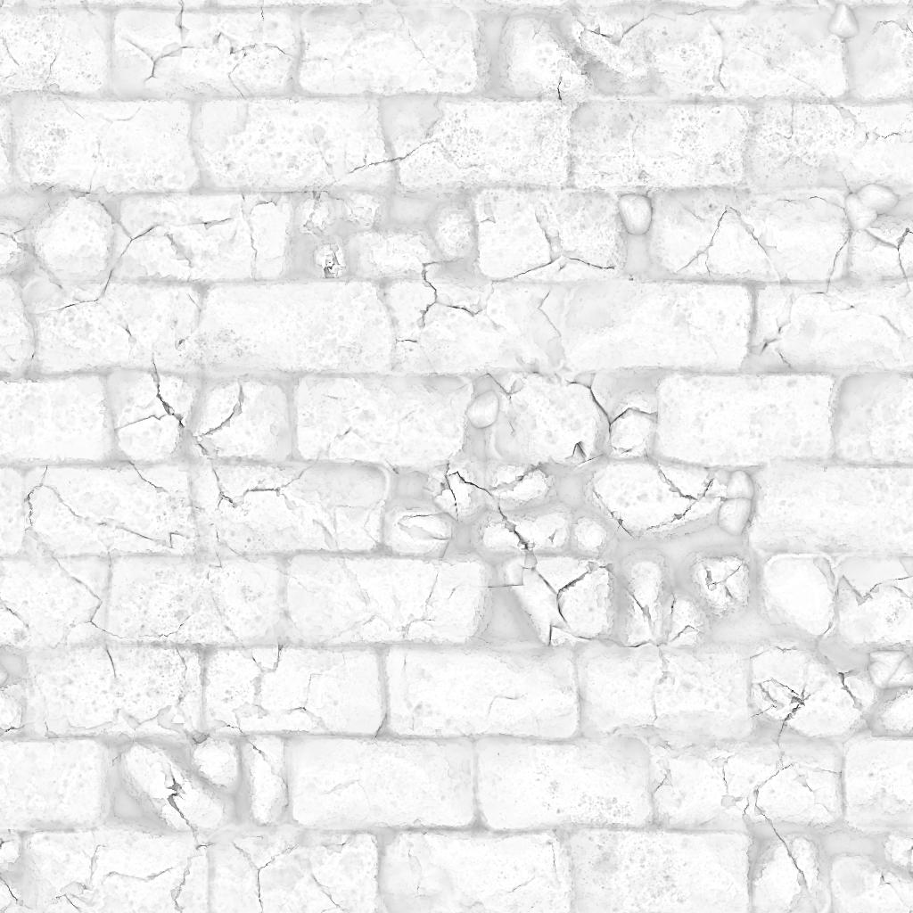
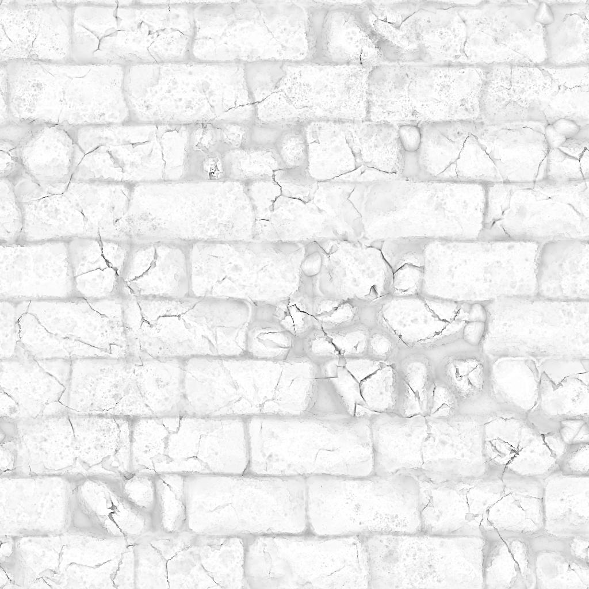
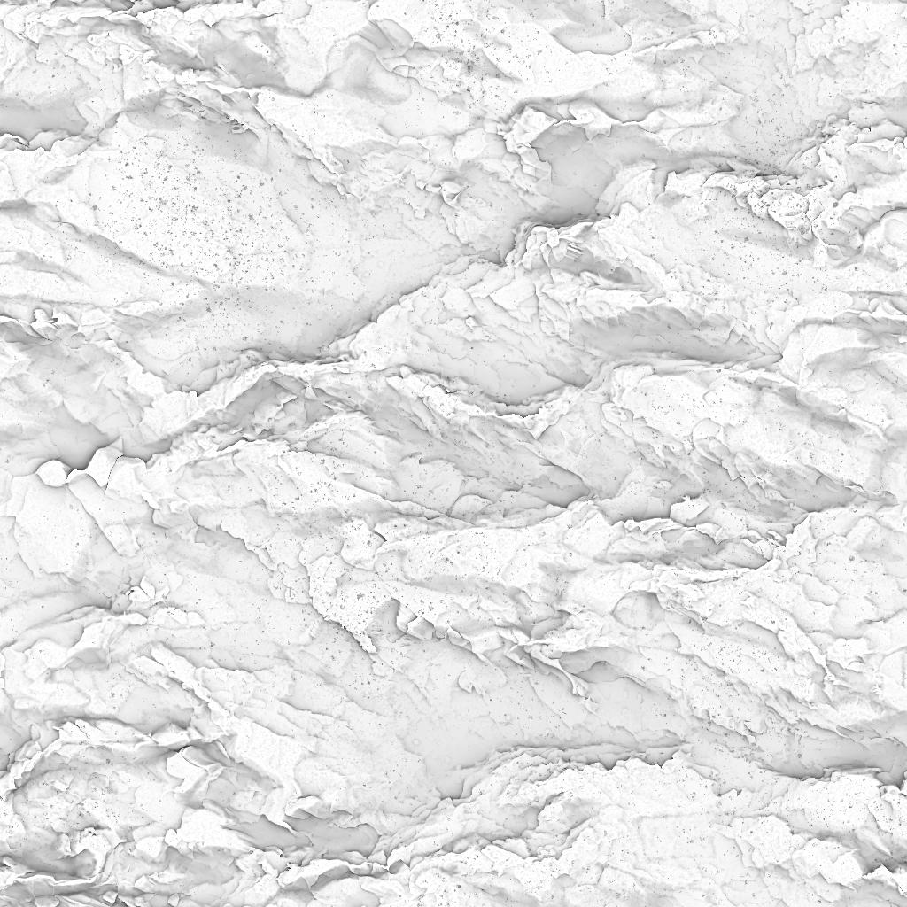
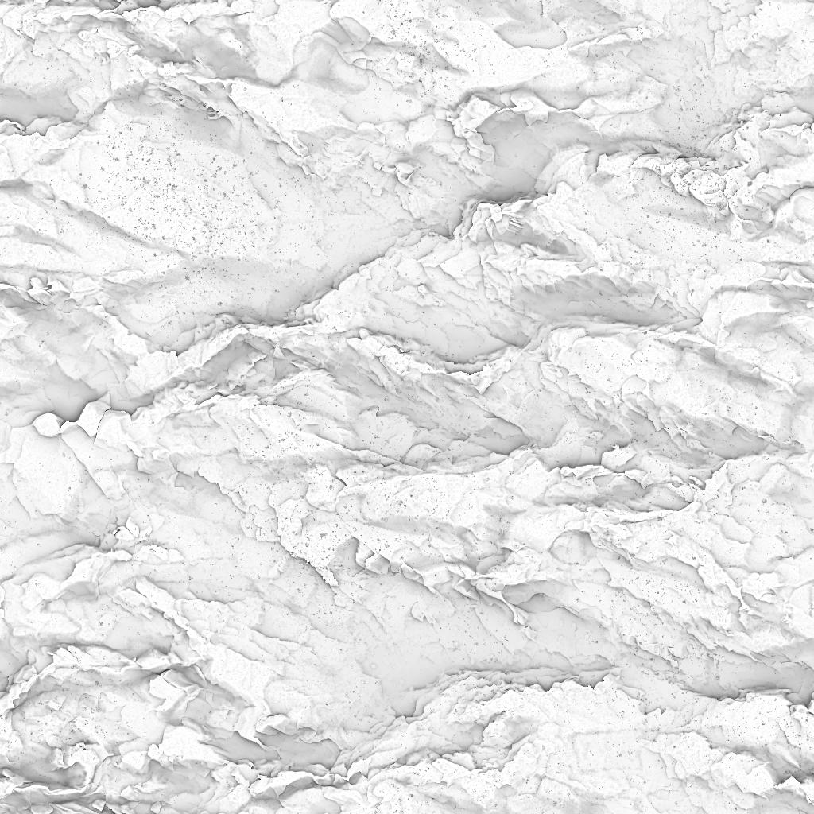
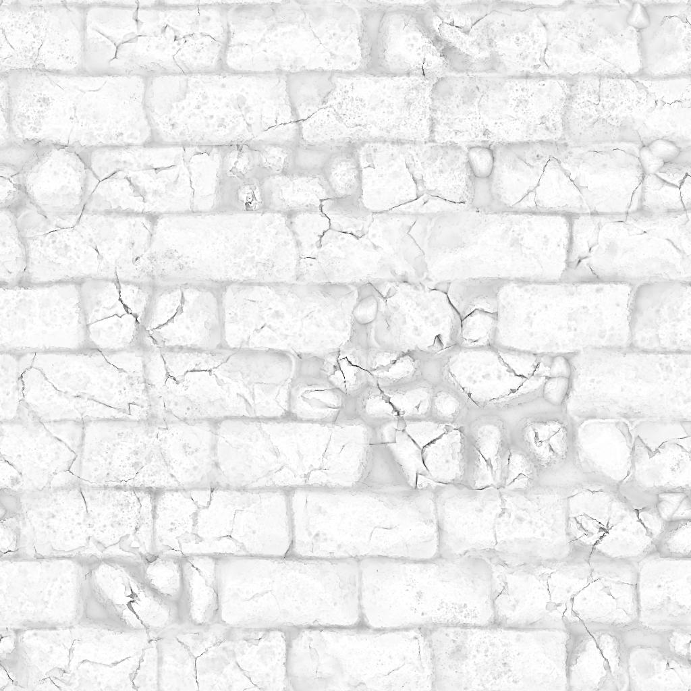
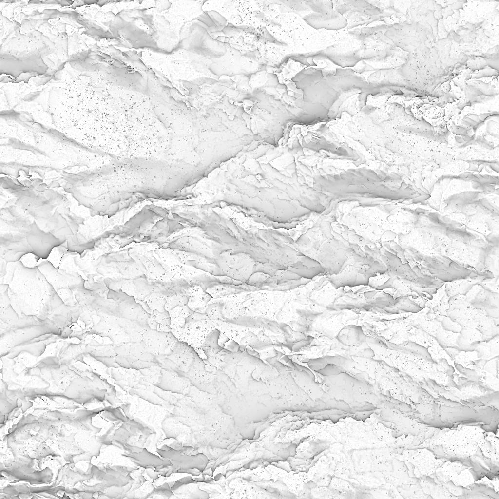

 

Immediate To-Do List:
* Make ermine statue clickable (links to errormine indirectly)
* Make ermine statue grabbable in VR
* Make ermine statue grabbable in desktop
* Reconfigure physics floor
* Reconfigure ground plane (no more ankle-deep slop)
* Change control behaivior to FPS-like for desktop only

